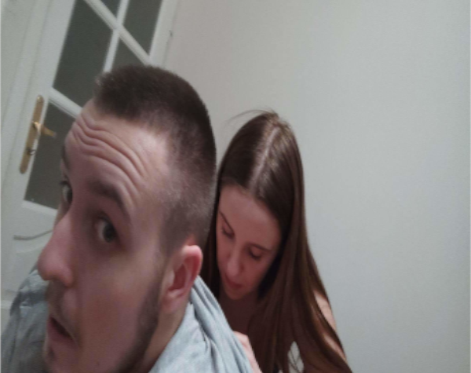

Hanna Tulipan
Urodzona 4 września 2003 roku w Kurzniach, które są drugą największą metropolią w kraju zaraz po Pilonie.
Uczęszcza do technikum na jakimś wypizdowie, a jej zainteresowania to głównie Piotr, jednak czasem też lubi pooglądać tiktoka.
Posiada wybitną wiedzę kulinarną, chemiczną i biologiczną.

Hania bierze Piotra od tyłu
Osiągnięcia
- Wybitne osiągnięcia w dziedzinie nauki
- Została technikiem małym chemikiem
- Jest dziewczyną Sznycera
Ważne wydarzenia
- Sylwester w Olsztynie
- Odwiedziny Pilony
- Gril w Nowinie
- Spanie na parkingu
Ciekawostki
- Ma wielkie serce
- Brakuje jej 18 cm, żeby załapać się na bycie karłem
- Jej stary sponsorował lokalną drużyne Bizon Kurznie